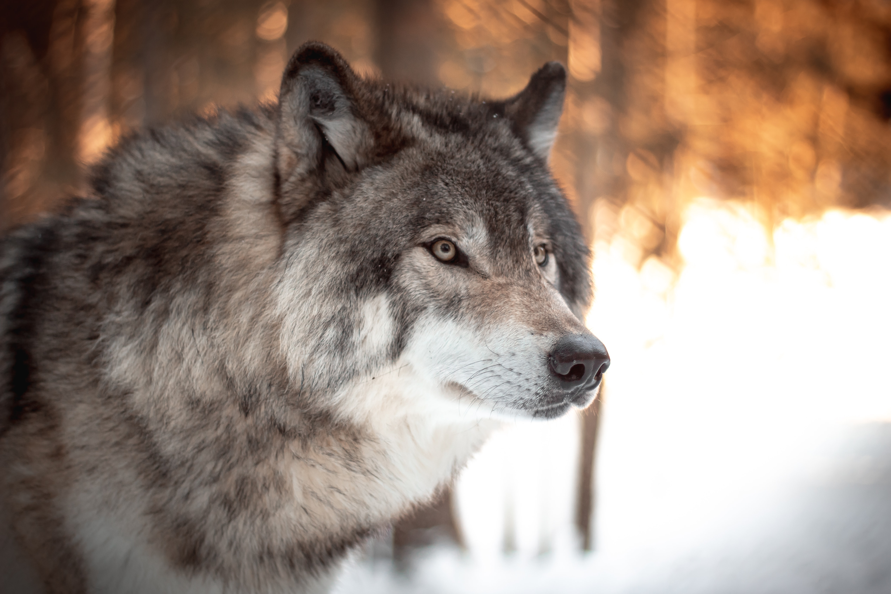

Average Weith
females: 60 to 80 pounds males: 70 to 110 pounds

females: 60 to 80 pounds males: 70 to 110 pounds
26 to 32 inches (at the shoulder)

females: 4.5 to 6 feet (tip of nose to tip of tail) males: 5 to 6.5 feet

up to 13 years in wild (usually 6 to 8 years) up to 16 years in captivity
4 inches wide by 5 inches long
Gray, but can also be black or white
42 teeth
February to March
63 days
1 pound
4 to 6 pups
2 to 30 or more
5 to 8
25 to 150 square miles in Minnesota 300 to 1,000 in Alaska and Canada
36 to 38 miles per hour for short distances

ungulates (hoofed animals like deer, moose, caribou, elk, bison, musk-oxen)